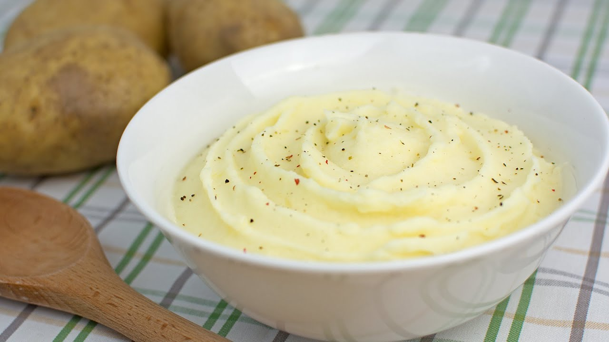

Guarniciones
← Recetas
Puré de Patatas Casero

Preparación
- Pela y corta las patatas en trozos grandes del mismo tamaño. Ponlas en una cazuela, cubre con agua y lleva a fuego alto.
- Cuando arranque a hervir, cuece unos 15 minutos (según el tipo de patata y el tamaño).
- Comprueba pinchando con un cuchillo o palillo: si entra fácil, están listas.
- Escúrrelas y déjalas 2-3 minutos soltando el exceso de agua.
- Aún calientes, pásalas a un bol grande y añade la mantequilla en cubos (da cremosidad y sabor).
- Machaca integrando la mantequilla con prensapatatas, pasapurés o tenedor hasta un puré espeso.
- Añade la sal y la leche templada poco a poco, mezclando, hasta el punto de espesor que te guste.
- Sirve dándole forma con la cuchara y decora con pimienta recién molida. Ideal como guarnición de carnes, pescados y verduras.